Examples
Acoustic-Doppler Profiler Data
A built-in file (sub-sampled to just one sample per hour, and only a single day) is provided with the package. Below, you can see how to plot (1) images of velocity components as a function of time and distance and (2) covariation of eastward and northward components, with a red line indicating local coastal orientation.
using OceanAnalysis
using GLMakie
file = joinpath(pkgdir(OceanAnalysis), "data", "adp_rdi.000")
beam = read_adp_rdi(file);
xyz = beam_to_xyz(beam);
enu = xyz_to_enu(xyz, declination=-18.1); # decl for local region
# 1. Scatterplot of u vs v
KW = (fontsize=11, markersize=2)
fig = plot_adp(enu; which=:uv, title="uv", KW...)
save("adp_rdi_uv.png", fig)
# 1. Heatmap of u, v and w
KW = (fontsize=11, colorrange=(-1.5, 1.5))
fig = Figure()
plot_adp!(fig[1, 1], enu; which=:velocity1, title="Eastward velocity [m/s]", KW...)
plot_adp!(fig[2, 1], enu; which=:velocity2, title="Northward velocity [m/s]", KW...)
plot_adp!(fig[3, 1], enu; which=:velocity3, title="Upward velocity [m/s]", KW...)
save("adp_rdi_velocity.png", fig)
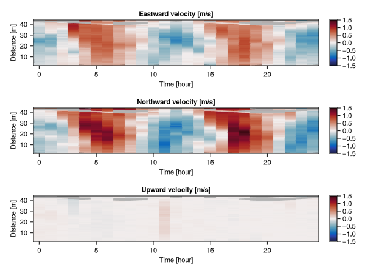
AMSR Satellite Data
The AMSR satellite provides several data streams, including sea-surface temperature, which may be plotted as follows. In addition to the SST field, the 1-km isobath is also shown.
using OceanAnalysis
using GLMakie # or CairoMakie
file = get_amsr()
sst = read_amsr(file, "SST");
title = "SST " * sst["time_coverage_start"][1:10] *
" to " * sst["time_coverage_end"][1:10] *
" (with 1-km isobath shown)"
fig = plot_amsr(sst; limits=(275.0, 350.0, 20.0, 65.0), title=title)
# Add 1-km isobath. Note the transposition of the data (needed for Makie) and
# the redrawing, required because AMSR has 0<=lon<=360 whereas topography
# has -180<=lon<=180.
tf = get_topography()
t = read_topography(tf);
contour!(t["longitude"], t["latitude"], t.data',
levels=[-1000.0], color=:black, linewidth=1)
contour!(360.0 .+ t["longitude"], t["latitude"], t.data',
levels=[-1000.0], color=:black, linewidth=1)
save("amsr.png", fig, px_per_unit=2)
Argo Data
Argo summary plots
The following shows how to read an Argo NetCDF file, convert to a Ctd object, and then create some summary plots.
# Read and plot a built-in Argo file
using OceanAnalysis, Dates, Measures, Printf
using GLMakie # or CairoMakie
# Get data
ctd = joinpath(pkgdir(OceanAnalysis), "data", "D4902911_095.nc") |>
read_argo |>
as_ctd;
# Non-mutating example (single panel)
fig = plot_profile(ctd; which="CT")
save("argo_profile_1.png", fig, px_per_unit=2)
# Mutating example (multiple panels)
fig = Figure()
plot_profile!(fig[1, 1], ctd; which="SA");
plot_profile!(fig[1, 2], ctd; which="sigma0");
plot_TS!(fig[1, 3], ctd);
save("argo_profile_2.png", fig, px_per_unit=2)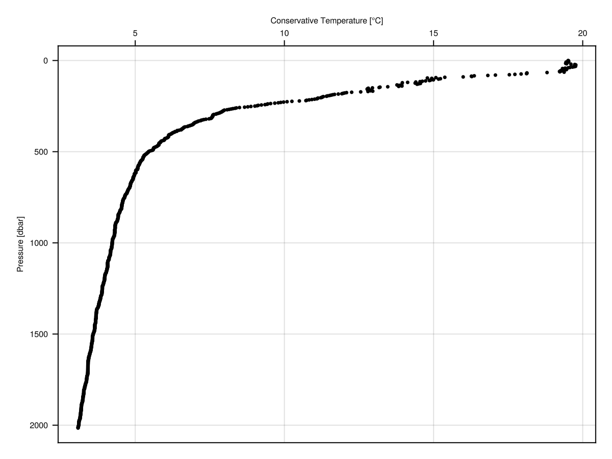
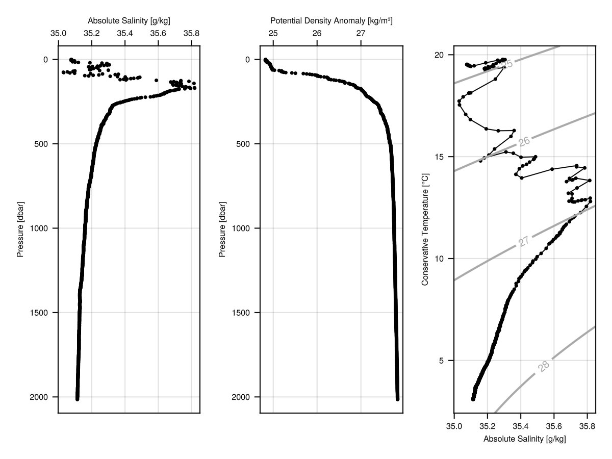
Argo quality-control handling
The following illustrates the use of handle_qc for Argo data. The top row shows salinity and temperature profiles, with red dots for points marked with quality-control (QC) values other than '1'. (Note that Argo QC values are stored as characters, not as numbers.) The bottom row shows a TS diagrams for the raw data and the cleaned-up data. Note that the salinity errors are so large as to control the plot scales in the left-hand panels. This is not an uncommon situation, and so it is a good idea to handle QC flags early in analysis procedures. However, sometimes the flags seem to be in error, and so a prudent analyst will start by plotting as in the top row. Exercise: add a middle row showing just the cleaned-up profiles.
# Illustrate QC processing of hydrographic data
using OceanAnalysis
using GLMakie # or CairoMakie
f = joinpath(pkgdir(OceanAnalysis), "data", "D4901076_139.nc")
argo = read_argo(f);
ctd = as_ctd(argo);
ctd_clean = handle_qc(ctd);
summarize(ctd)
summarize(ctd_clean)
fig = Figure() # will fill with 4 panels
plot_profile!(fig[1, 1], ctd; which="salinity")
badS = ctd["salinity_qc"] .!= '1';
scatter!(ctd["salinity"][badS], ctd["pressure"][badS], color=:red, markersize=2)
plot_profile!(fig[1, 2], ctd; which="temperature")
badT = ctd["temperature_qc"] .!= '1';
scatter!(ctd["temperature"][badT], ctd["pressure"][badT], color=:red, markersize=2)
plot_TS!(fig[2, 1], ctd)
bad = badS .| badT;
scatter!(ctd["SA"][bad], ctd["CT"][bad], color=:red, markersize=2)
plot_TS!(fig[2, 2], ctd_clean)
save("argo_qc.png", fig, px_per_unit=2)
Argo Search
The following shows how to map Argo profile locations made within 200 km of Sable Island, during the past year.
# Show Argo profiles within 200 km of Sable Island in last 5 years
using OceanAnalysis, CSV, DataFrames, Dates, Printf
using GLMakie # or CairoMakie
radius = 200 # km
years = 5 # years
# Get the index
index_file = get_argo_index("~/data/argo")
index_all = read_argo_index(index_file)
# Set time subset
today = now(UTC)
start = today - Dates.Year(years)
recent = start .< index_all.time .< today
# Set distance subset
lon0 = -59.915
lat0 = 43.934
radius = 200.0 # km
distance = map(i -> geod_distance(lon0, lat0,
index_all.longitude[i], index_all.latitude[i]),
1:nrow(index_all))
near = distance .< radius
# Filter by both time and distance
index = index_all[recent.&near, :]
# Extend region of map to show geographic context
t = "$(length(index.file)) profiles within $radius km of Sable Island in $years years"
fig = plot_coastline(coastline(), title=t,
limits=[lon0 - 3; lon0 + 3; lat0 - 3; lat0 + 3])
scatter!(index.longitude, index.latitude)
save("argo_search.png", fig, px_per_unit=2)
Argo Trajectory
The following shows how to display a trace of the positions of a single Argo float.
# Plot a float trajectory with colour for sequence number
using OceanAnalysis, Printf, Statistics
using GLMakie # CairoMakie
ID = r"D4902911" # focus on this ID
index_file = get_argo_index("~/data/argo");
index_all = read_argo_index(index_file) # 3.2e6 profiles
index = index_all[occursin.(ID, index_all.file), :]
sort!(index, :time) # this lets us join dots in time order
lon, lat = index.longitude, index.latitude
lonr = extrema(lon)
latr = extrema(lat)
fig = plot_coastline(coastline(),
scalebar=(distance=500, x=:right, y=:top),
limits=[lonr[1] - 2; lonr[2] + 2; latr[1] - 2; latr[2] + 4])
scatterlines!(lon, lat)
save("argo_trajectory.png", fig, px_per_unit=2)
Bathymetry (high-resolution) Data
High-resolution bathymetry data
Bathymetry files at 10m and 100m resolution are provided for some Canadian waters via a somewhat-awkward GUI interface at https://data.chs-shc.ca/dashboard/map. The following shows how to plot such data, after downloading a dataset. (This only works for the TIFF form of the data.)
using OceanAnalysis
using GLMakie # or CairoMakie
filename = expanduser("~/data/nonna/NONNA10_4460N06360W.tiff")
if isfile(filename)
n = read_nonna(filename)
fig = heatmap(n["longitude"], n["latitude"], permutedims(n.data), colormap=:turbo,
axis=(aspect=DataAspect(),))
save("nonna.png", fig)
end
Bathymetry (low-resolution) and topography data
The following downloads topographic data for a domain including southern Nova Scotia, and displays the data in three plot styles.
using OceanAnalysis, GLMakie
topo_file = get_topography(-67, -62, 43, 46, resolution=1)
topo = read_topography(topo_file);
# Single panel
fig = plot_topography(topo) # domain defaults to :land_and_sea
save("topography_1.png", fig, px_per_unit=2)
# Multiple panels
fig = Figure(size=(800, 200))
plot_topography!(fig[1, 1], topo, domain=:land_and_sea) # same as above
plot_topography!(fig[1, 2], topo, domain=:sea)
plot_topography!(fig[1, 3], topo, domain=:land)
save("topography_2.png", fig, px_per_unit=2)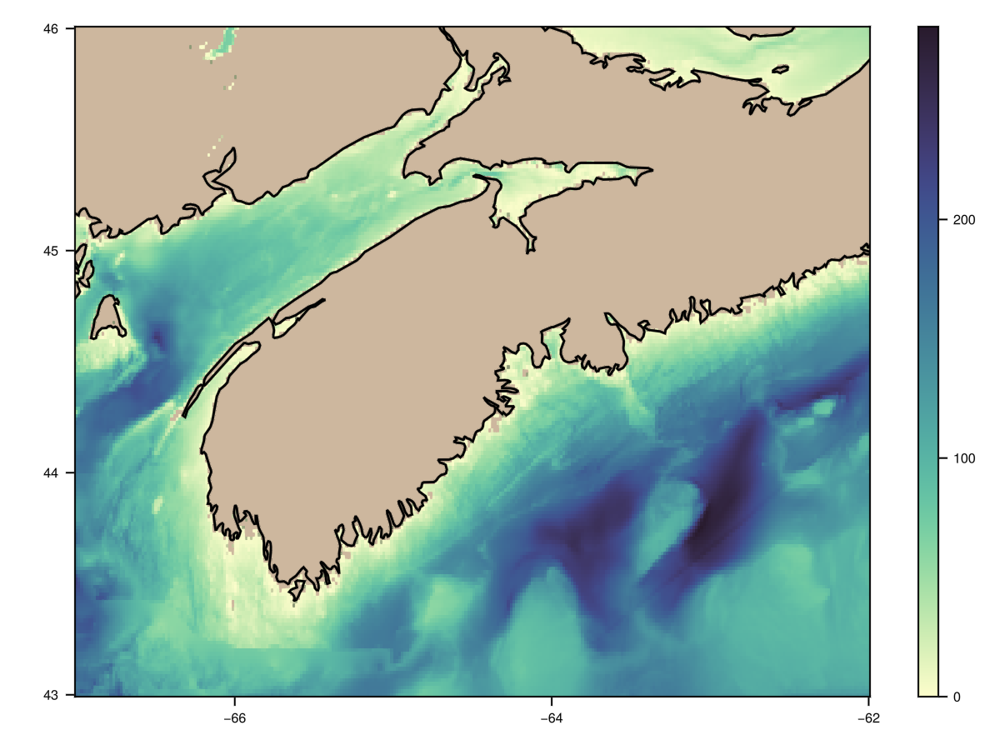
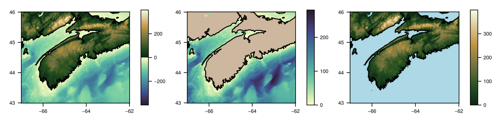
Coastline Data
The following produces a Canada-wide view on the left, with a red inset marker for Nova Scotia, and then a Nova Scotia view on the right. Thin lines are used to show details of the wiggly coastlines.
using OceanAnalysis
using GLMakie # or CairoMakie
cl = coastline();
fig = Figure()
L = (-140, -50, 43, 76) # plot limits: east, west, south, north
l = (-67, -58, 43, 47.5)
# Left panel
plot_coastline!(fig[1, 1], cl, limits=L, linewidth=0.2) # thin lines are prettier
lines!([l[1], l[1], l[2], l[2], l[1]], [l[3], l[4], l[4], l[3], l[3]], color=:red)
# Right panel
plot_coastline!(fig[1, 2], cl, limits=l, scalebar=true)
save("coastline.png", fig, px_per_unit=5)
CTD Data
The following shows how to read a built-in CTD file, and plot some hydrographic diagrams.
CTD profiles
# Read and plot a built-in CTD file
using OceanAnalysis, Printf
using GLMakie # or CairoMakie
filename = joinpath(pkgdir(OceanAnalysis), "data", "ctd.cnv")
ctd = read_ctd_cnv(filename);
fig = Figure()
plot_profile!(fig[1, 1], ctd; which="CT");
plot_profile!(fig[1, 2], ctd; which="SA");
plot_profile!(fig[1, 3], ctd; which="sigma0");
save("ctd_profiles.png", fig, px_per_unit=2)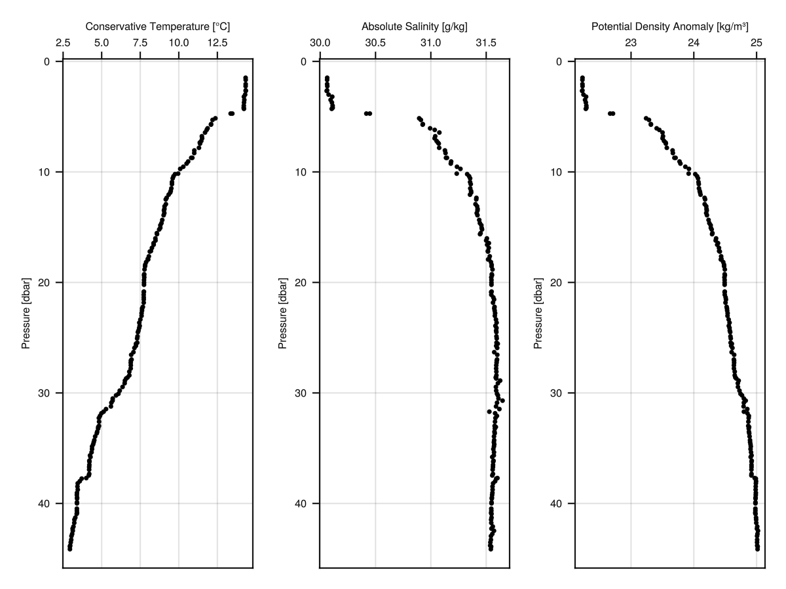
CTD smoothing
The following shows how to grid CTD data in 1-dbar intervals; note that the mean spacing of the data is 0.24 dbar. Note the trick of using uniform y values, so that interpolate_barnes() will effectively do a one-dimensional analysis of the variation of Absolute Salinity with sea pressure.
# Smooth to 1-dbar grid; note that mean(diff(p))=0.24 dbar.
using OceanAnalysis
using GLMakie # or CairoMakie
file = joinpath(pkgdir(OceanAnalysis), "data", "ctd.cnv")
ctd = read_ctd_cnv(file);
p = ctd["pressure"];
y = repeat([1], length(p)); # fake y data, with arbitrary value
SA = ctd["SA"];
dp = 1.0;
pg = range(0.0, maximum(p), step=dp);
g = interpolate_barnes(p, y, SA; xg=pg, xr=dp);
fig = plot_profile(ctd, which="SA", seriestype=:scatter)
lines!(g["zg"][:], g["xg"][:], color=:red, label=false)
save("ctd_smooth.png", fig, px_per_unit=2)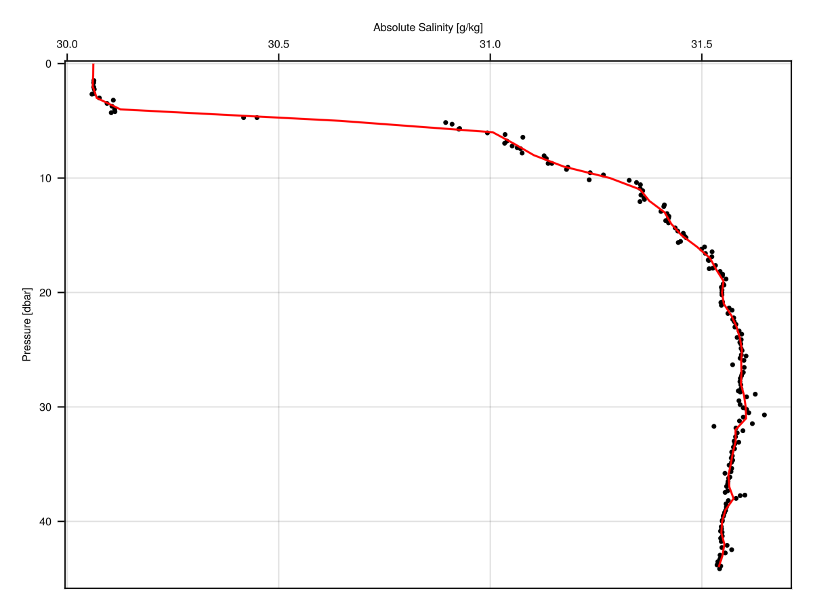
CTD temperature-salinity diagram
The colours in the diagram indicate sea pressure, in decibars. Zero-width marker borders are used to avoid having black ink obscuring the colours.
# Read and plot a built-in CTD file
using OceanAnalysis
using Printf
using GLMakie # or CairoMakie
filename = joinpath(pkgdir(OceanAnalysis), "data", "ctd.cnv")
ctd = read_ctd_cnv(filename);
title = @sprintf("CTD observations at %.3fN and %.3fE",
ctd["latitude"], ctd["longitude"])
fig = plot_TS(ctd, title=title)
save("ctd_TS.png", fig, px_per_unit=2)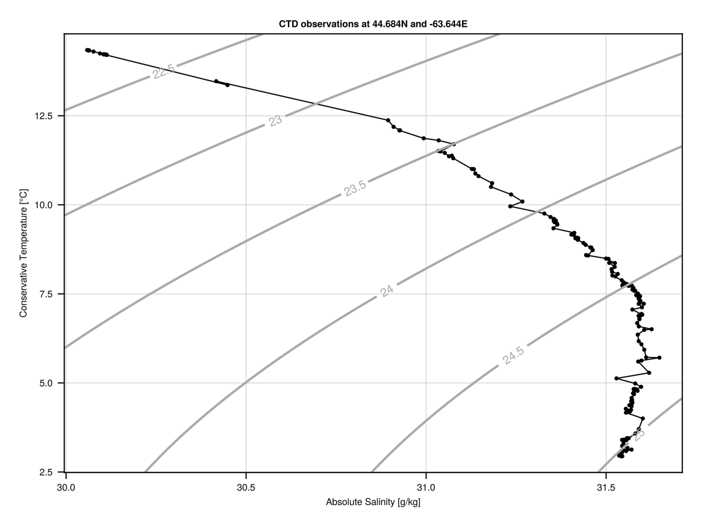
Digital Elevation Model Data
This example is based on a large file (not provided with this package) that was obtained via a GUI interface at https://nsgi.novascotia.ca/datalocator/elevation/. The view is of a portion of Halifax, Nova Scotia. The first diagram shows elevation itself, with light yellow for high elevation (where the Fort is located) and darker red for low elevation (towards the harbour, which the Fort protects). The second view shows the results of differentiating the elevation with respect to the "easting" coordinate, i.e. it is ∂η/∂x, where η is the elevation and x is eastward distance, both in metres. Note that a colorrange is provided in making this plot, to increase the contrast enough reveal features of the Fort and surrounding roads and buildings.
using OceanAnalysis
using GLMakie # or CairoMakie
file = "/Users/kelley/data/lidar" *
"/1044600063500_201901_DEM/1044600063500_201901_DEM.tif"
if isfile(file)
dem = read_dem(file)
lims = (-63.587, -63.575, 44.6426, 44.655)
dem = subset_dem(dem, lonlim=lims[1:2], latlim=lims[3:4])
fig = plot_dem(dem, coordinates=:geographic)
save("dem_1.png", fig, px_per_unit=4)
dem_slope = differentiate_dem(dem)
fig = plot_dem(dem_slope, coordinates=:geographic, colorrange=(-0.5, 0.5))
save("dem_2.png", fig, px_per_unit=4)
end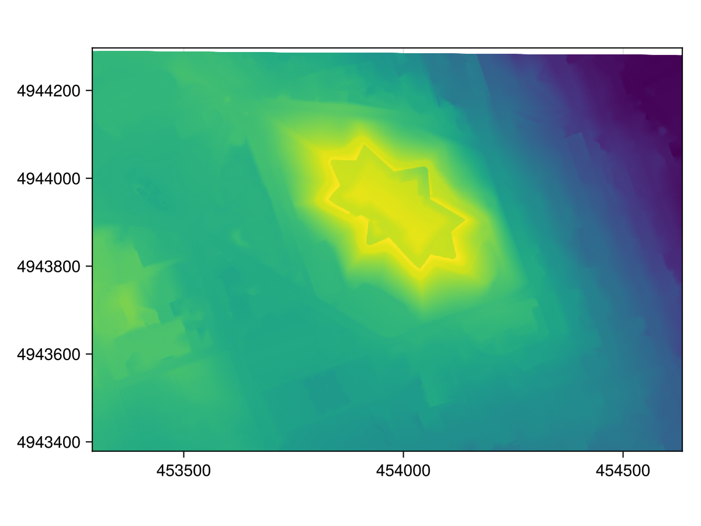
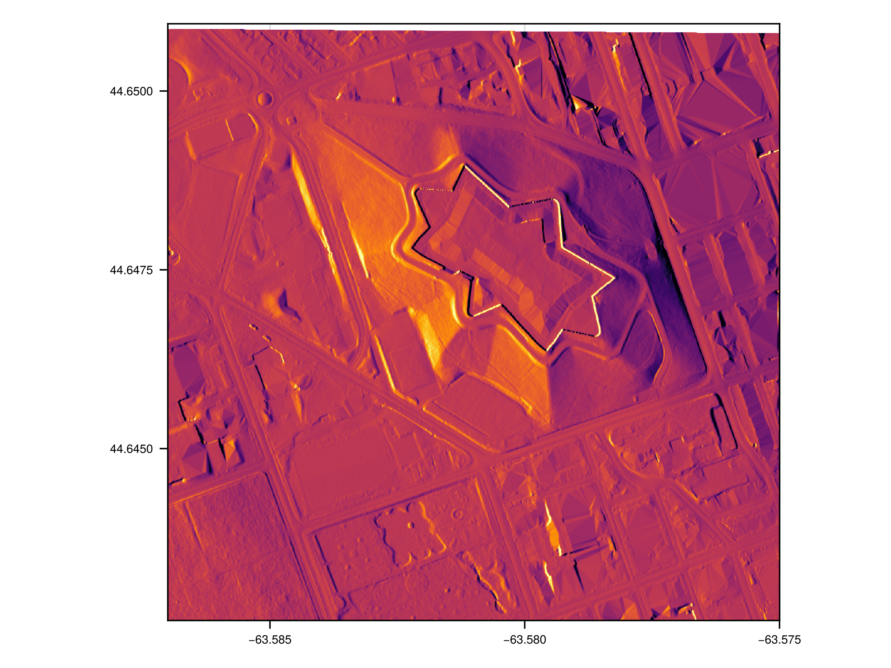
Echosounder Data
This uses a private data file acquired using a Biosonics scientific echosounder.
# This uses a private file
using OceanAnalysis, CairoMakie
f = "/Users/kelley/Dropbox/data/archive/sleiwex/2008/fielddata/2008-07-01/Merlu/Biosonics/20080701_163942.dt4"
if isfile(f)
e = read_echosounder(f)
fig = plot_echosounder(e)
save("echosounder.png", fig)
end
Section Data
The following code downloads data from a section survey in the North Atlantic ocean. (See https://cchdo.ucsd.edu for paths to other sections, noting that only the data type named 'exchange' is handled by the OceanAnalysis package.) Then it reads the data, and isolates a subset that runs roughly orthogonal to the mean path of the Gulf Stream. Finally, it plots a chart of sampling locations, along with cross-section diagrams of salinity and temperature.
using OceanAnalysis
using GLMakie # or CairoMakie
url = "https://cchdo.ucsd.edu/data/41926/90CT40_1_ct1.zip"; # exchange format
dir = get_section(url);
s = read_section(dir);
s.data = s.data[s["longitude"].<(-68.0)];
# We must grid to get the cross-section diagrams
sg = grid_section(s);
fig = plot_section(sg, which="salinity", type=:contourf)
save("section.png", fig, px_per_unit=2)
Tide Gauge (sealevel) Data
Map of stations
This the locations of tide gauges in the Maritimes region of Canada. Blue dots represent non-permanent tide gauges, while red dots represent permanent tide gauges. (As an exercise, restrict i according to latitude and longitude criteria, and then examine i.name to see the tide gauges in that region.)
using OceanAnalysis
using GLMakie # or CairoMakie
cl = coastline()
i = get_tide_gauge_index(:all); # requires internet access
limits = (-67, -59, 43.3, 47.2)
fig = plot_coastline(cl, limits=limits, scalebar=true, fontsize=12,
title="Tide gauges (red for permanent stations)")
scatter!(i.longitude, i.latitude, color=:blue, markersize=8)
look = i.type .== "PERMANENT"
scatter!(i.longitude[look], i.latitude[look], color=:red, markersize=18)
save("tide_gauge_locations.png", fig, px_per_unit=5)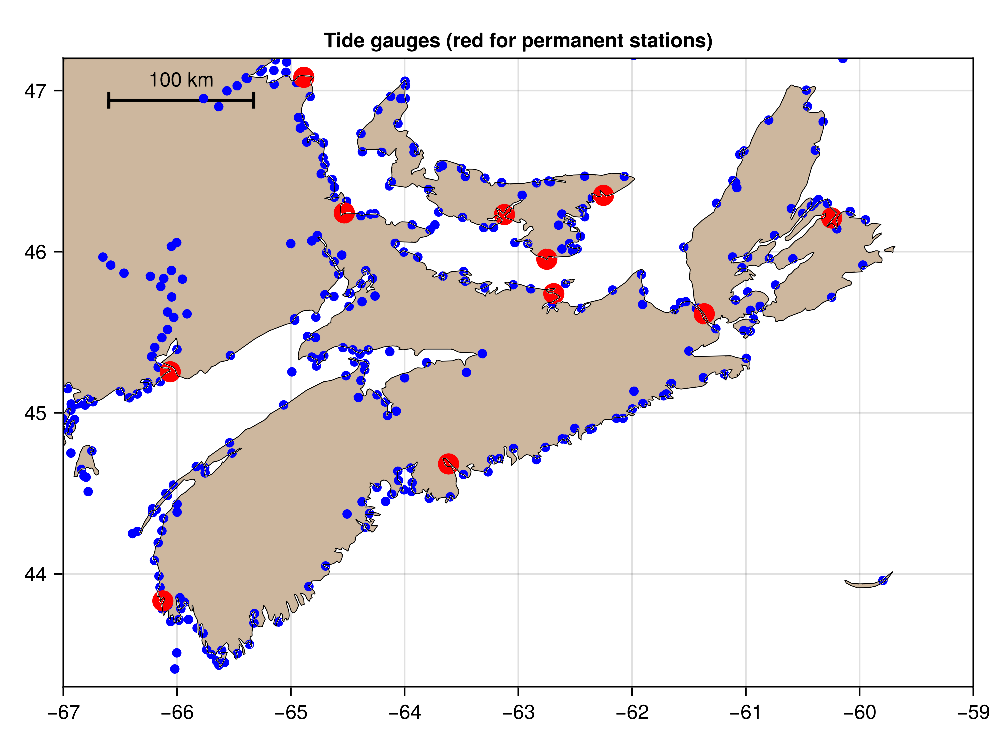
Plot elevation record
This shows how to download a week's worth of data for the Bedford Institute tide gauge, and plot it as a timeseries. (As an exercise, repeat the call to get_tide_gauge_file() with a specific times value. If you ask for too long an interval, the CHS server may report an error, in which case you ought to try increasing the value of resolution.)
using OceanAnalysis, CSV, DataFrames
using GLMakie # or CairoMakie
search = "Bedford" # full name is "Bedford Institute"
name, csv = get_tide_gauge_file(search)
data = CSV.read(csv, DataFrame)
fig = Figure()
ax = Axis(fig[1, 1], ylabel="Elevation [m]", title="Sea Level at $name")
lines!(data.time, data.value)
save("tide_gauge_timeseries.png", fig, px_per_unit=5)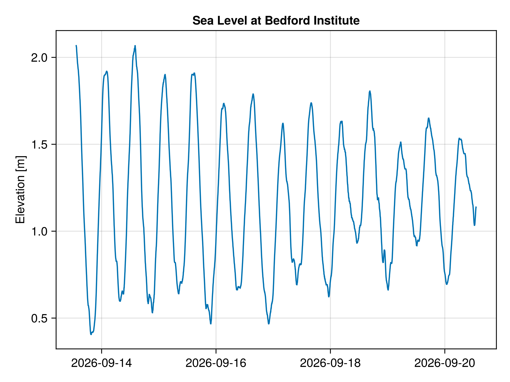